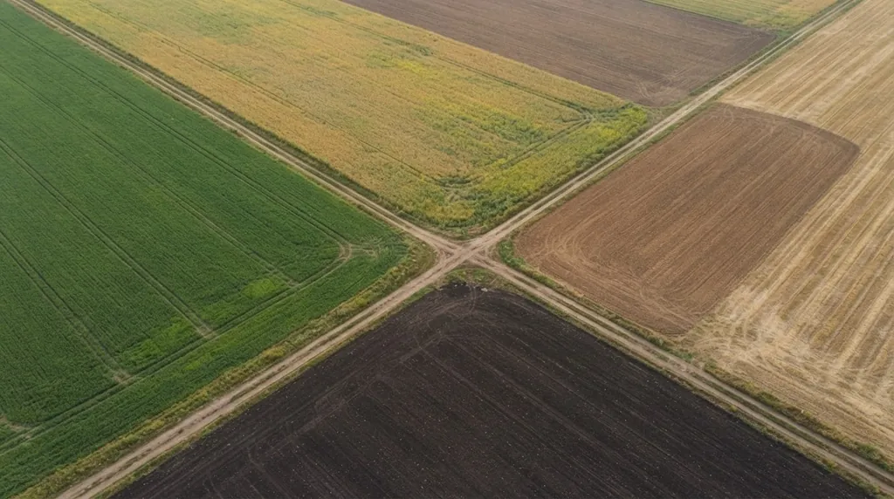

Коротко
- Схему складають у такому порядку: поля, набір культур, місце вимогливих культур, ланки, проміжні культури, перевірка пауз, ротаційна таблиця, книга історії полів.
- Частки культур звіряють з постановою КМУ № 164, а паузи до повернення з її таблицею: соняшник 7 років, цукровий буряк і зернобобові 3, озима пшениця 2.
- Нижче приклад п’ятипільної схеми для Лісостепу: горох, озима пшениця, цукровий буряк, кукурудза на зерно, ярий ячмінь.
- Схема має бути гнучкою: загибель озимих чи зміна ринку не повинні її ламати.
Вісім кроків
Схема не з’являється з одного рішення. Це послідовність дрібних, і порядок має значення, бо кожен крок звужує вибір на наступному.
1. Поділіть землю на поля. Врахуйте рельєф, розмір і форму ділянок, ширину агрегатів. Ідеал це поля приблизно однакової площі, щоб щороку мати однакову частку кожної культури. Окремо оцініть, де поганий ґрунт чи ерозія: такі ділянки потребують особливих культур або пару.
2. Оцініть ґрунт. Родючість, еродованість, кислотність. Для кожної ділянки варто мати аналіз pH, бо від нього залежить, які культури й добрива взагалі спрацюють. Як це виміряти, розписано в статті про вимірювання pH.
3. Оберіть набір культур. Орієнтуйтеся на зону, ринок і техніку. Одразу звіряйте частки із нормативами постанови КМУ № 164: наприклад, соняшник у Лісостепу має займати 5–9% посівів, ріпак 3–5%.
4. Поставте вимогливі культури на найкращі місця. Озимій пшениці віддайте пар, багаторічні трави чи зернобобові. Цукровому буряку озиму пшеницю чи зернобобові. Таблицю попередників дивіться в статті про польові культури.
5. З’єднайте культури в ланки. Горох і озима пшениця, кукурудза й ярий ячмінь. Із ланок збирається повна схема. Ланки можуть бути різної довжини.
6. Визначте місце проміжних і покривних культур. Для багаторічних трав підберіть покривну культуру, під яку їх сіятимете, бо безпокривні посіви невигідні й швидко засмічуються. Проміжні культури розставте так, щоб вони не заважали головним.
7. Перевірте паузи. Кожну культуру перевірте по таблиці мінімальних строків повернення. Соняшник не раніше ніж через 7 років, цукровий буряк, ріпак і зернобобові через 3, озима пшениця й картопля через 2.
8. Складіть ротаційну таблицю й заведіть книгу історії полів. У таблиці записують, яка культура на якому полі в який рік. У книзі історії полів для кожного поля окремо хронологічно фіксують культури, обробіток, добрива, догляд і захист від бур’янів, шкідників і хвороб. Її зазвичай веде головний агроном або агроном відділку.
Приклад: п’ять полів, Лісостеп
Це ілюстрація, а не проєкт для конкретного господарства. Ланцюг такий: горох, озима пшениця, цукровий буряк, кукурудза на зерно, ярий ячмінь. Потім усе повторюється з гороху.

Перевіримо кожен перехід за таблицею попередників.
| Культура | Йде після | Чи прийнятно |
|---|---|---|
| Озима пшениця | гороху | так, зернобобові серед кращих попередників; у Полтавському досліді саме після гороху пшениця дала найбільше, 4,52 т/га |
| Цукровий буряк | озимої пшениці | так, це стандартний попередник |
| Кукурудза на зерно | цукрового буряку | так, кукурудзу розміщують після озимих, зернобобових і цукрових буряків |
| Ярий ячмінь | кукурудзи | так, ячмінь любить просапні попередники |
| Горох | ярого ячменю | так, добрими попередниками для зернобобових є ярі й озимі зернові |
Паузи: кожна культура повертається на поле раз на п’ять років, тобто після чотирьох інших. Горох і цукровий буряк мають мінімум три роки, озима пшениця два, кукурудза й ячмінь менше. Усі в межах постанови.
Частки: кожна культура займає по 20%. Зернові й зернобобові (горох, пшениця, кукурудза, ячмінь) разом 80%, технічні (цукровий буряк) 20%. Лісостеп допускає для зернових і зернобобових 25–95%, для технічних 5–30%. Теж у нормі.
Чому тут немає соняшнику? Бо в Лісостепу норма для нього 5–9% посівів, а в п’ятипільній схемі одне поле це 20%. Соняшник у такій структурі просто не вміщається, і його тримають у довшій ротації або на окремому полі.
Ось ротаційна таблиця на п’ять років.
| Рік | Поле 1 | Поле 2 | Поле 3 | Поле 4 | Поле 5 |
|---|---|---|---|---|---|
| 1 | горох | озима пшениця | цукровий буряк | кукурудза на зерно | ярий ячмінь |
| 2 | озима пшениця | цукровий буряк | кукурудза на зерно | ярий ячмінь | горох |
| 3 | цукровий буряк | кукурудза на зерно | ярий ячмінь | горох | озима пшениця |
| 4 | кукурудза на зерно | ярий ячмінь | горох | озима пшениця | цукровий буряк |
| 5 | ярий ячмінь | горох | озима пшениця | цукровий буряк | кукурудза на зерно |
Де вставити пар
У цьому прикладі пару немає: це Лісостеп, де вологи зазвичай більше, ніж у Степу, і зернобобові дають пшениці добрий старт. Для Степу картина інша: там у нормативах з’являється чорний пар, і схему доводиться будувати навколо нього. Вибір між видами пару розписано в окремій статті про чорний, ранній і зайнятий пар.
Схема має бути гнучкою
Папір не змінює погоду. Озимі можуть загинути, ціна на культуру може змінитися, і від схеми доведеться відступити. Це нормально, якщо відступ записано. Поле пересівають іншою культурою, яку підбирають так, щоб вона компенсувала втрачений врожай і сама була придатним попередником для наступної за схемою. Книга історії полів потрібна саме для цього: через три роки ніхто не згадає, що було на полі 4.
Про те, як схема взаємодіє з живленням ґрунту, читайте в розділі «Сівозміна і живлення рослин» посібника.
Часті запитання
Скільки полів потрібно для сівозміни?
Стільки, скільки культур у циклі. Для польового господарства зазвичай від чотирьох до десяти. Чим довші паузи для культури, тим довшою виходить ротація.
Що робити, якщо озимі загинули взимку?
Поле пересівають іншою культурою, підбираючи її так, щоб урожай компенсував втрати, а сама вона була прийнятним попередником для наступної за схемою. Зміну записують у книгу історії полів.
Чи можна змінювати схему під ринок?
Можна, якщо перевіряти нову комбінацію за паузами повернення й частками культур. Одноразові відхилення лишаються в межах схеми, а системні потребують переписаної ротаційної таблиці.
Де взяти нормативи для перевірки схеми?
Частки культур по регіонах і мінімальні паузи є в постанові КМУ від 11.02.2010 № 164. Перед розрахунками звіряйте чинну редакцію на сайті Верховної Ради.

Директор НВ ТОВ «СІНТА», розробник органічних добрив ТМ GREENODIN.
Опубліковано 12 жовтня 2026. Оновлено 12 жовтня 2026.
Джерела
- Постанова КМУ від 11.02.2010 № 164 «Про затвердження нормативів оптимального співвідношення культур у сівозмінах в різних природно-сільськогосподарських регіонах»
- Гангур В. В., Котляр Я. О. Вплив попередників на водоспоживання та продуктивність пшениці озимої в Лівобережному Лісостепу України. Вісник Полтавської державної аграрної академії, 2021, № 1, с. 122–127
- Цилюрик О. І., Шевченко М. С. Роль чистого пару в накопиченні води і відновленні водного балансу в сівозміні. Зернові культури, 2019, т. 3, № 2, с. 318–330